Resurrection Bench
Three real websites from 1999, archived by the Wayback Machine. A system gets only a short video of someone clicking through each site, and must rebuild a working site. We then click the rebuilt site at the same places and compare every screen with the real pages.
| System | NASA | FEMA | NOAA | Look | Layout | Journey | Score |
|---|---|---|---|---|---|---|---|
| Blank page | 0% | 0% | 0% | 0% | 0% | 0% | 0% |
| First frame pasted as one image | 19% | 20% | 20% | 32% | 1% | 33% | 20% |
| Claude Code, from the video only | 81% | 75% | 80% | 82% | 65% | 100% | 79% |
- Look: pixel similarity with the real page. 0 % means no better than a blank page.
- Layout: the real links and images are there, at the same place and size.
- Journey: each click opens the right page.
- The two first rows are reference points: an empty page, and a cheat that pastes the first video frame as one picture (it looks right until you click).
NASA nasa.gov, January 1999 81%
Input video · Try the recreated site
1Home pageStart
look 83% · layout 74% · journey ✓
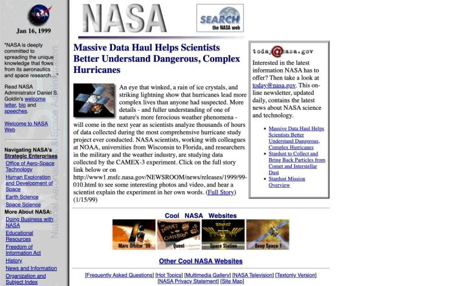
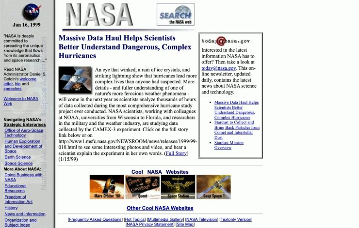
2Multimedia GalleryClick at (512, 679)
look 86% · layout 65% · journey ✓
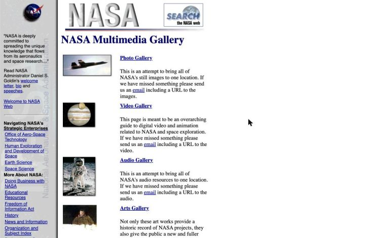
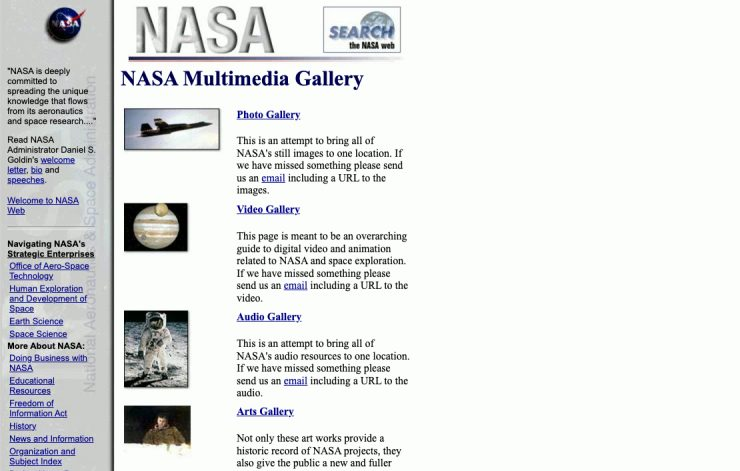
3Video GalleryClick at (402, 314)
look 83% · layout 69% · journey ✓
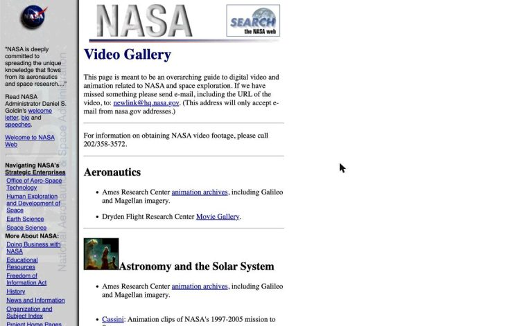
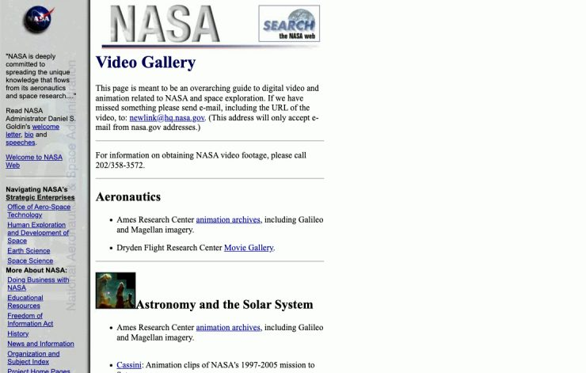
FEMA fema.gov, January 1999 75%
Input video · Try the recreated site
1Home pageStart
look 74% · layout 78% · journey ✓
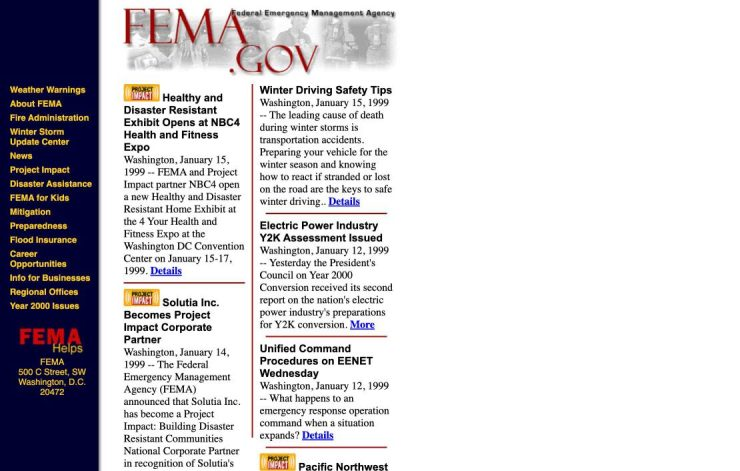
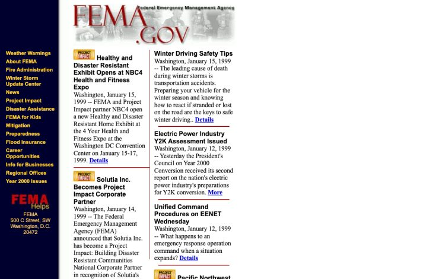
2FEMA for KidsClick at (60, 296)
look 80% · layout 44% · journey ✓
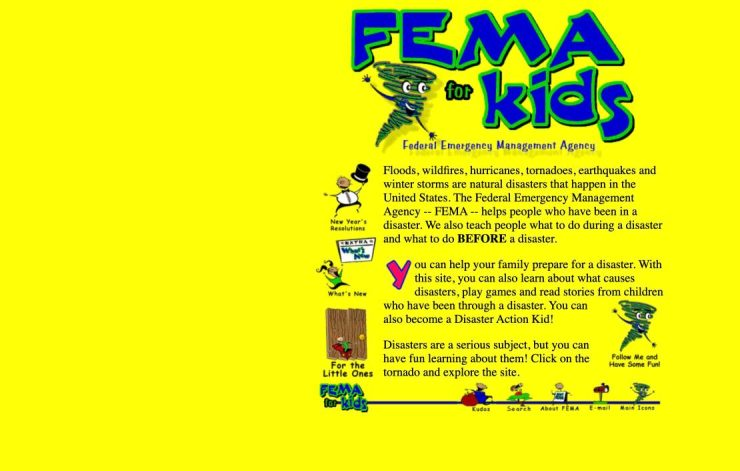
3Main IconsClick at (950, 495)
look 91% · layout 46% · journey ✓
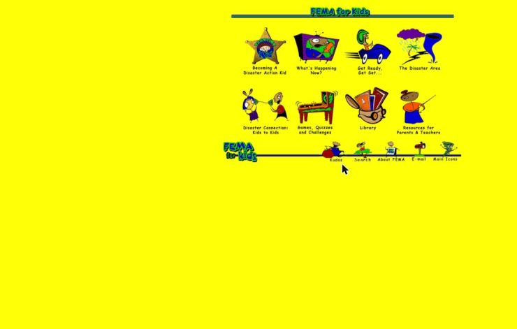
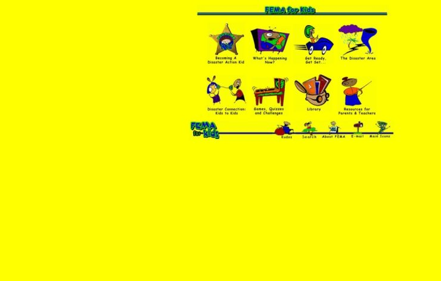
NOAA noaa.gov, January 1999 80%
Input video · Try the recreated site
1Home pageStart
look 88% · layout 80% · journey ✓
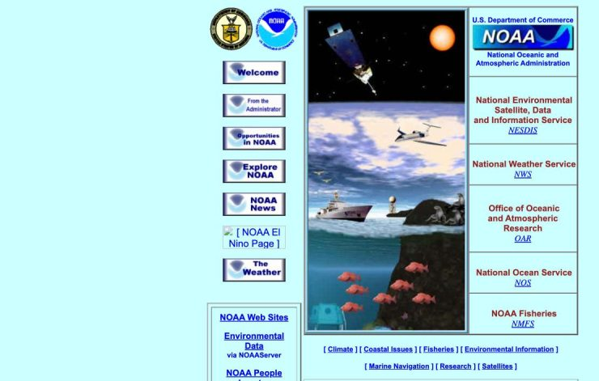
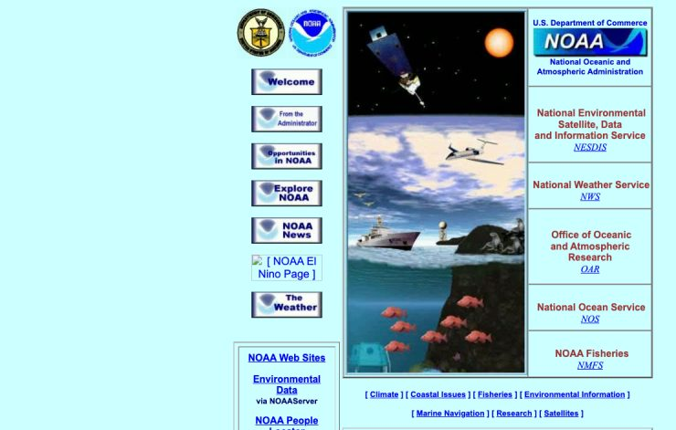
2Explore NOAAClick at (470, 317)
look 83% · layout 87% · journey ✓
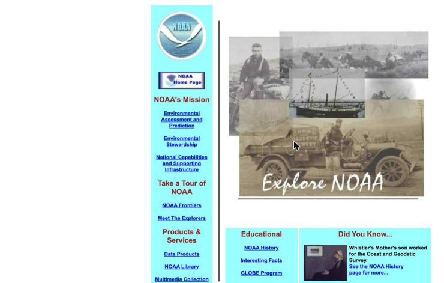
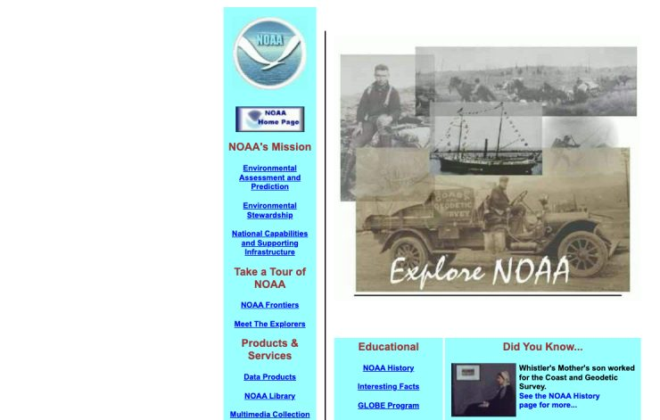
3NOAA HistoryClick at (653, 618)
look 72% · layout 41% · journey ✓
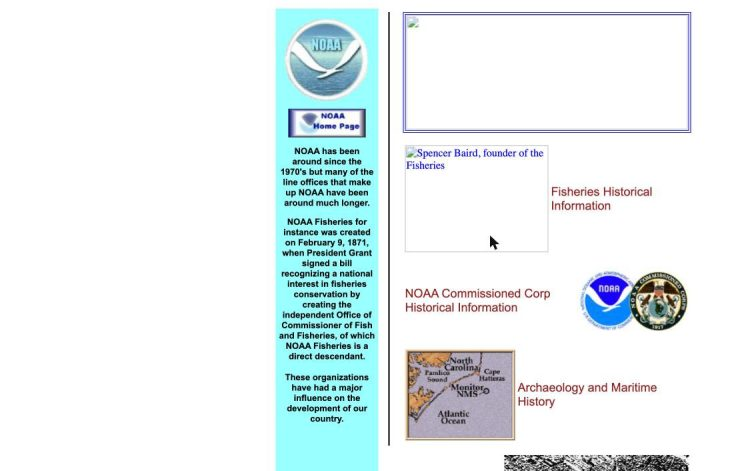
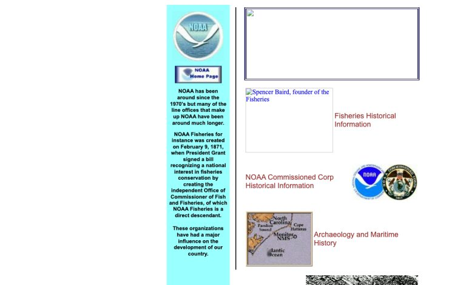
Code and method: github.com/Redaelm47/resurrection. Captures of US federal government sites, public domain.